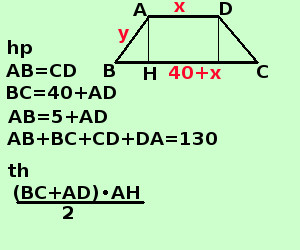

|
soluzione Risolvere il seguente problema In un trapezio isoscele la base maggiore supera la minore di cm 40, mentre il lato obliquo supera di 5 cm la base minore. Sapendo che il perimetro vale cm. 130 trovare l'area del trapezio  AD = x BC = 40 + x AB = CD = y " il lato obliquo supera di 5 cm la base minore" si scrive y = 5 + x "il perimetro vale cm 130" si scrive y + (40 + x) + y + x = 130 cm 2x + 2y= 90 x + y = 45 Faccio il sistema
risolvo con il metodo di sostituzione
quindi AD = 20cm BC = 40cm + 20cm = 60cm AB = 25cm BH = (BC-AD)/2= (60-20)/2 =20cm AC = cm 25 applico il teorema di Pitagora al triangolo AHB AH2 = AB2 - BH2 = 625cm2 - 400cm2 = 225cm2 AH = √225cm2 = 15cm ora posso trovare l'area Area = (BC + DA)·AH /2 = (60cm + 20cm)·15cm/2 = 600cm2 L'area vale 600 cm2 |